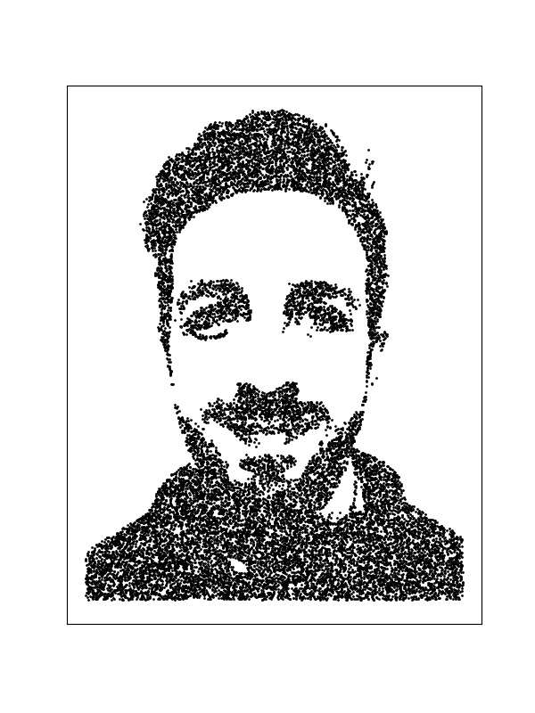

Up until very recently, I was a PhD researcher at the University of Reading, but I have now handed in my thesis and am awaiting my Viva. My PhD was in Food and Nutritional Sciences, and my project was focussed around on-pack dates: how they contribute to waste and how they could be improved. Generally speaking, I had a very broad project covering biology, chemistry, microbiology and quite a lot of coding. I am now trying to figure out what I want to do with the rest of my life.
PhD researcher at the University of Reading. Here is my researchgate profile
researchgateMy current hobby is Data Science, mainly in the form of kaggle. Here is my profile
Kaggle